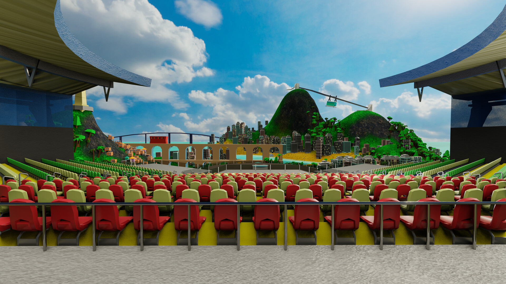

Imaginar con propósito
Exploro conceptos, mecánicas e interacciones para dar identidad y dirección a cada experiencia.

Biografía · Richard Mendonça
Soy Richard Mendonça y trabajo en desarrollo de videojuegos, diseño de juegos y gestión de proyectos. Me gusta convertir buenas ideas en experiencias interactivas, combinando creatividad, tecnología y colaboración.
He trabajado en videojuegos y experiencias digitales para distintas plataformas, desde mundos virtuales hasta proyectos WebGL. Cada proyecto es una oportunidad para aprender, experimentar y crear algo que las personas puedan explorar.



Imágenes de proyectos propios y colaborativos. Este espacio también puede incluir fotos personales y del proceso creativo.
Cómo trabajo
Exploro conceptos, mecánicas e interacciones para dar identidad y dirección a cada experiencia.
Convierto ideas en prototipos y sistemas jugables, conectando diseño e implementación.
Organizo prioridades y conecto personas para que los proyectos creativos avancen con claridad.
Un portafolio en construcción
Explora proyectos de desarrollo, diseño de juegos y gestión para descubrir distintos retos, ideas y mundos que ayudé a crear.
Sigue explorando
Prueba los proyectos jugables o explora imágenes de los proyectos.